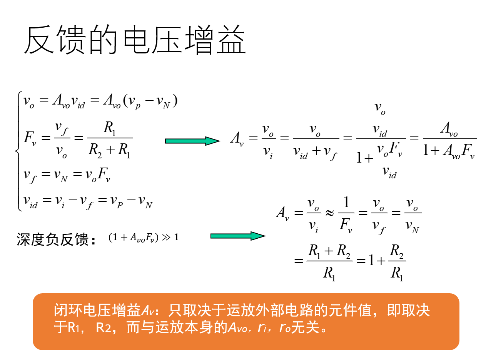

运算放大器:组成单元，参数特点，什么是理想运放与其模型，反馈的概念（不要求分析，即不要求判断正反），深度负反馈是什么回事 重要：虚断等 求差求和等电路的基本形式与特征，输入输出电阻啊等
运算放大器
集成电路运算放大器
功能：
- 信号放大
- 信号运算
- 信号处理（滤波、调制）
- 波形的产生和变换
分类
- 通用运放和专用运放
- 单运放、双运放、四运放
内部组成单元
不讨论集成运放的内部电路，仅从其电路模型和外特性出发，讨论运放构成的放大电路和典型的线性应用电路
$v_p$称为同相输入端，因为当$v_n=0$时$v_o$和$v_P$同相，而$v_n$被称为反相输入端，因为$v_o$在$v_P$为0时的信号与$v_n$反相
符号：
电路模型
放大：在输入信号控制下，放大电路将供电电源能量转换为输出信号能量
通常开环电压增益很高，输入电阻很大，输出电阻很小。
$v_O=A_{vo}(v_p-v_N)$ $(V_-<v_O<V_+)$
当$v_O$超过端值之后取端值，如下：
理想运算放大器
理想运算放大器的特点：
- 开环差模电压增益无穷大
- 差模输入电阻无穷大
- 输出电阻为0
其$V_P-V_N>0$时取$V_+$,小于0时取$V_-$
基本线性运算放大电路
同相放大电路

- 反馈：系统的输出返回到输入端并以某种方式改变输入，进而影响系统功能的过程，即将输出量通过某种恰当的检测装置返回到输入端并与输入量进行比较的过程
- 反馈通路：信号反向传输的渠道
- 反馈形式：
- 正反馈：输入量不变，引入反馈后，输出量变大(也可以认为输出不变净输出量减小)
- 负反馈：输入量不变，引入反馈后，输出量变小（也可以认为输出不变，净输出增大）
- 判断方法：瞬时极性法
同相放大电路的负反馈：$v_p(v_i)$上升导致，$v_o$上升，导致$v_n$上升，进而导致$v_{id}$下降从而导致$v_o$下降
利用输出电压通过反馈元件对放大电路起自动调整作用
如上，其中$A_v$的分母$(1+𝐴_{vo}F_v)$被称为反馈深度，当其远大于1也就是$1+A_{vo}F_v \approx A_{vo}F_v$时，被称为**深度负反馈**
运放的两个重要概念：
- 虚短：在深度负反馈作用下，$v_N$自动跟踪$v_P$,净输入电压$(v_P-v_N)\to 0$,即P端和N端相当于短路
- 虚断：由于虚短的存在，而输入电阻又很高，即流经两输入端之间的电流$i_P=i_n \approx 0$
- 虚短是本质的，虚断是派生的
在同向放大电路中，加到两输入端的电压接近相等，相位相同是它在闭环状态下工作的重要特征
几项技术指标的近似计算：
- 电压增益 $A_v=1 + \frac{R_2}{R_1}$
- 根据虚短和虚断的概念，$v_p\approx v_n$,$i_p=i_n=0$,故而$v_i=v_p\approx v_n = v_f =\frac{R1}{R1+R2}v_o$
- 输入电阻$R_i = v_i/i_i \to \infty$
- 输出电阻 $R_o = r_o||[(R_1||r_i)+R_2] \to 0$
电压跟随器：
- 令$R_1=\infty, R_2=0$，电压增益为1，可以用于阻抗变换器和缓冲器
反相放大电路
根据虚短和虚断的概念，有$v_n=v_p=0$,因此反相输入端电位接近地电位， 称为虚地
$𝐴_𝑣 = 𝑣_𝑜/𝑣_𝑖 = −𝑅_2/𝑅_1$（负号表示和输入反向）
输入电阻：$𝑅_𝑖=𝑣_𝑖/𝑖_𝑖 =𝑣_𝑖/(𝑣_𝑖/𝑅_1)=𝑅_1$
输出电阻：$𝑅_𝑜=𝑟_𝑜||𝑅_2→0$
如果信号源是非理想的电压信号源，应当采用同向放大电路，因为输入电阻更大(避免非理想信号源分压过大)
同向输入和反向输入放大电路的其他应用
求差电路
又称为是差分放大电路，是反相输入和同相输入相结合的放大电路